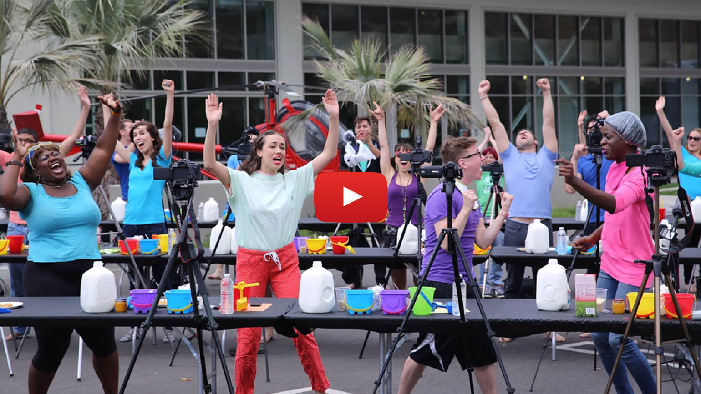
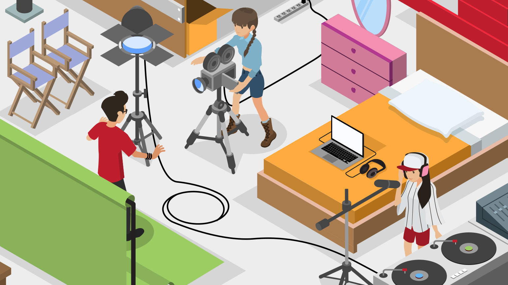
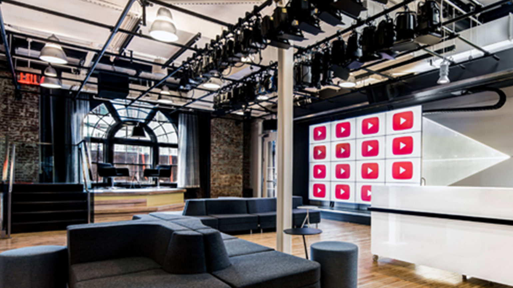

|  | Welcome! |
|---|---|
| The Creator Hub is THE destination for fantastic resources to help you make great videos, find your audience and grow your channel. |
| YouTube for Creators | |
|---|---|
| With the YouTube for Creators benefits programme, we�re there with you every step of the way as your channel grows. Starting with Graphite benefits � which are open to all creators � as your subs number grows, you'll unlock new benefit levels which include all sorts of perks, from workshops and events to production access at the YouTube Spaces and much more. |
|  | YouTube Academy |
|---|---|
| The Creator Academy has a huge catalogue of tutorials made to challenge and inspire your creativity. The lessons will give you the inside scoop on how to shoot and edit amazing videos, and make sure your viewers see them too. |
| Creator updates | In the news |
|---|---|
| The Creator Monthly is a great way to keep up with everything that's happening in the YouTube community! Try it out and get the inspiration that you need to make bigger and better videos. | Check out the official YouTube Creator Blog for the latest product announcements, info about new tools (and how to use them), competition details and more. |
|  | |
| YouTube Spaces | Creator Community |
|---|---|
| YouTube Spaces bring together the most creative people on YouTube to learn, connect and create with one another. The Spaces can be found across the globe and offer workshops as well as the latest production resources available � all there to help bring your biggest ideas to life. | Take a look at the Creator Community where you can share ideas, ask questions and get to know other creators! There are tons of great threads about starting out, collaborations and much more. |
| Creator Awards | Creator Services Directory |
| We know that it takes a lot of work, time and talent to do what you do. And that's why we celebrate 3 HUGE milestones in your journey: the 100 thousand, 1 million and the incredible 10 million subscribers mark. At each milestone, we award creators just like you with a Silver, Gold or Diamond Creator Award to celebrate! | Looking for a little extra help growing your channel? From channel optimisation, to promotion and music licences, our directory of YouTube-certified companies can help you take the next step with your channel.
|